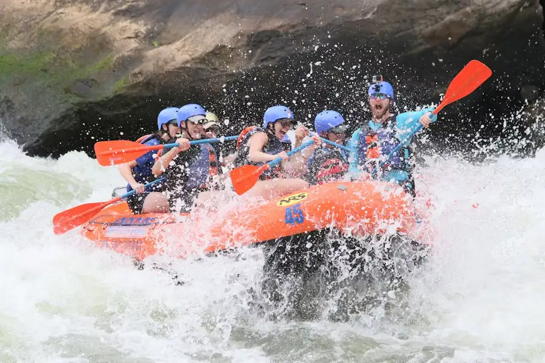
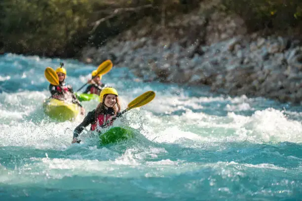
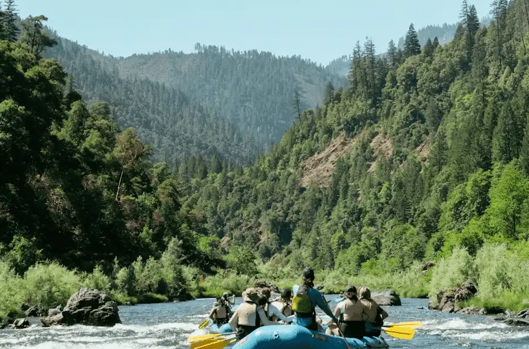

Rapids!
Newsletter

Our Mission

Our mission is to deliver unforgettable white water rafting adventures that combine safety, excitement, and a deep respect for nature. We strive to guide every guest—whether a first-timer or seasoned rafter—through thrilling experiences while fostering confidence, teamwork, and environmental stewardship. Our motto, “Ride the Rapids, Respect the River,” reflects our commitment to both adrenaline-filled journeys and preserving the wild beauty that makes them possible.
